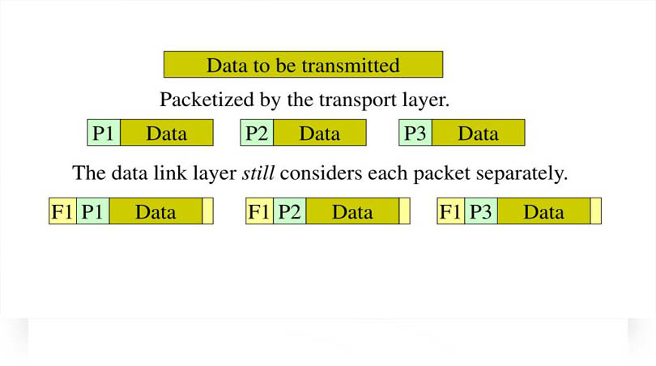

Subscribe Us
Back
Functionalities of NETWORK LAYER
fourth
PACKETIZING

As network consist of a large number of machines, where all of them are in communication with each other. In the case of communication, large number of data is present on medium all the time. In order to transmit this data accurately and in a way that medium do not get rash, it is divided into small packets (chunks of data). This process is called Packetizing, scroll down to read the definition of packetizing in technical way.
WAN has a concept based on many elements but two of them are Packetizing and Multiplexing. Other elements are switching, Transmissions, services, selections. Let's read about topic what is Packetizing. * Organize a group of bits in a predetermined & structure format. * Include user's data, overhead or management information for error-free transmission. * Packets, frames, cells, blocks, data units.
* Packetizing is a process of dividing long messages into smaller ones. Definition of packetizing in term of network layer, upper layer, data link layer. * Encapsulate the payload (bigger size data into packets) at source (sender computer) via network layer and decapsulate those packets at the destination (receiver) is called Packetizing. * While encapsulation the data at source(sender computer) upper-layer protocol adds a header which has sender address and receiver addresses. Also includes some information that is required by the network-layer and delivers the packet to the data-link layer. * While receiver, receives those packets from its data-link layer, decapsulates the packet, and pass the data(packets which is received) to the upper-layer protocol.